paper-figures — figure gallery
36 figures across 8 studies. Use the list on the left to jump to any study; each figure has its own ↓ download.
Final figures


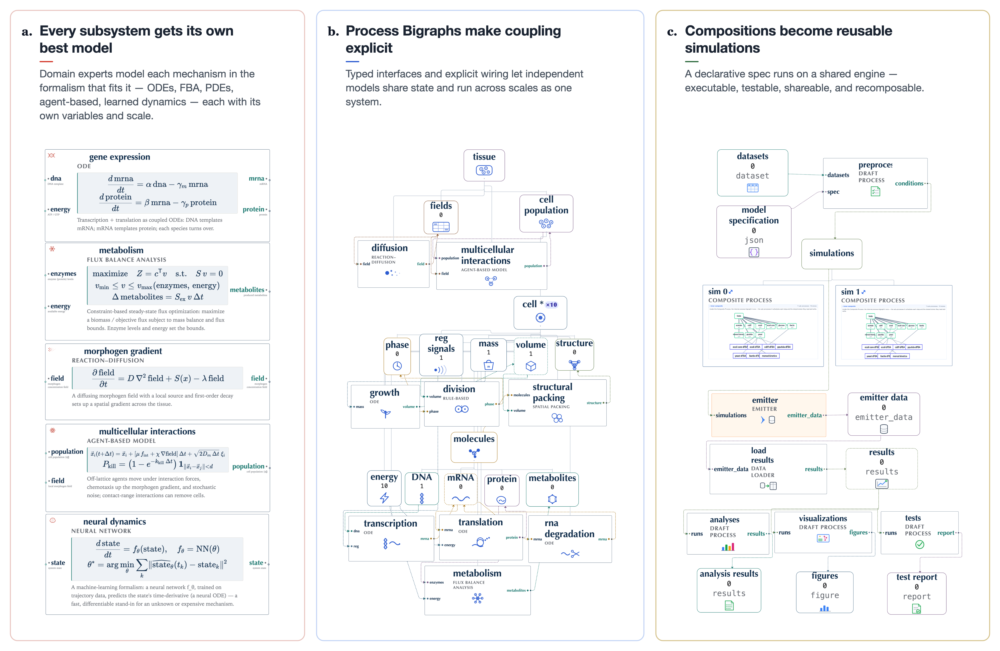

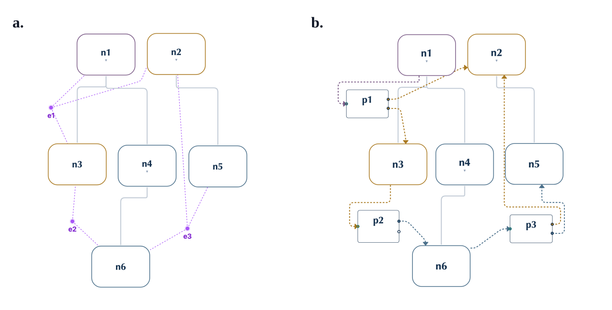

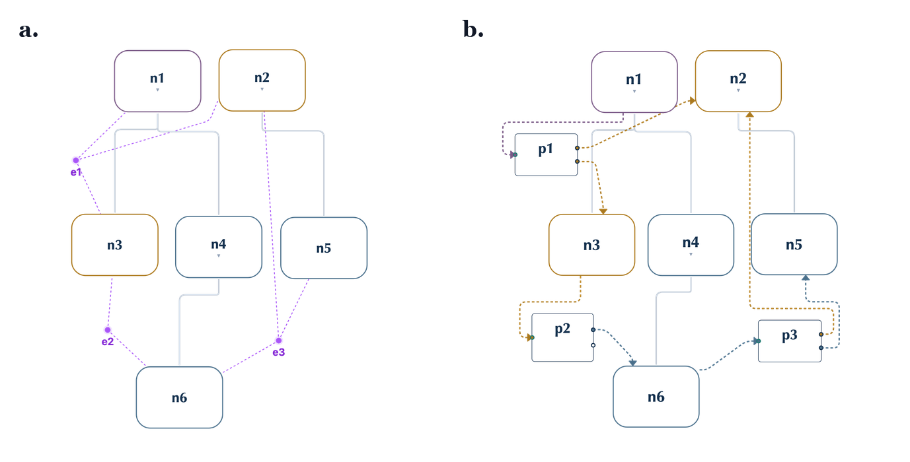

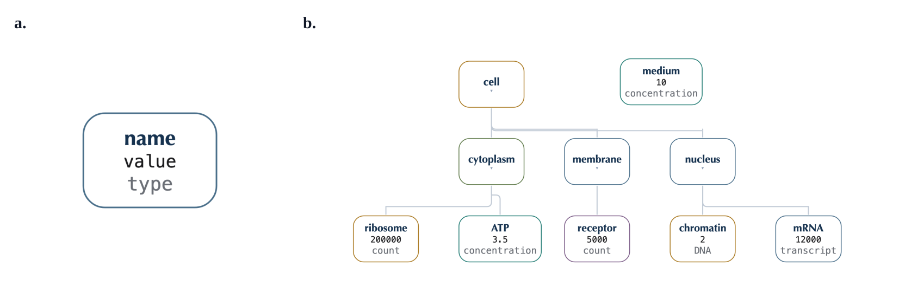

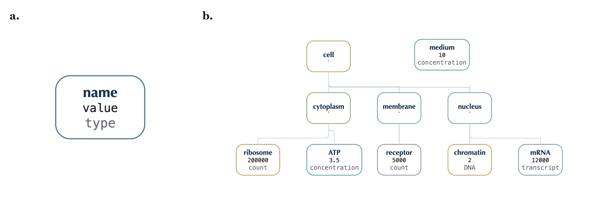


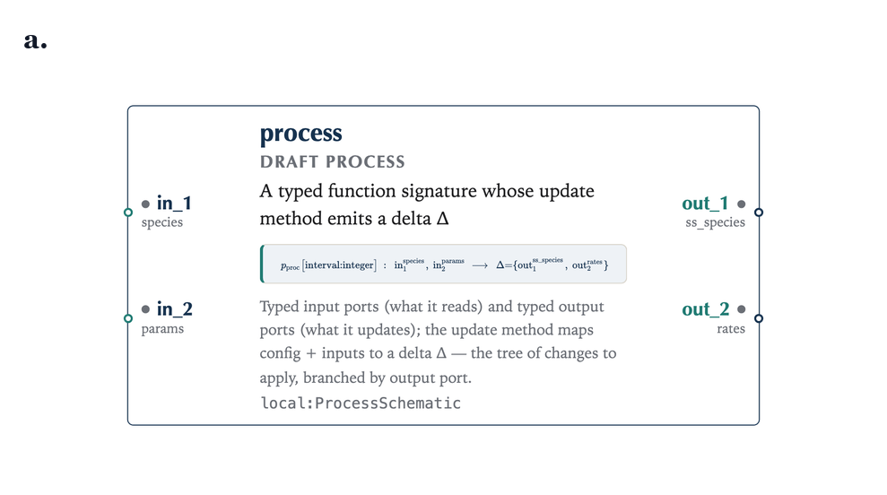

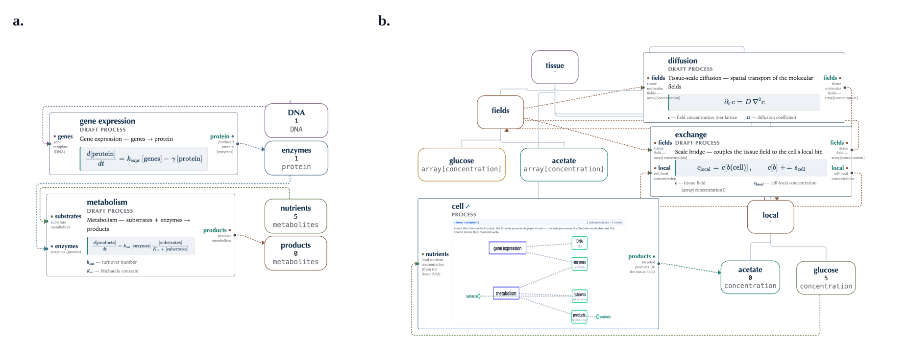

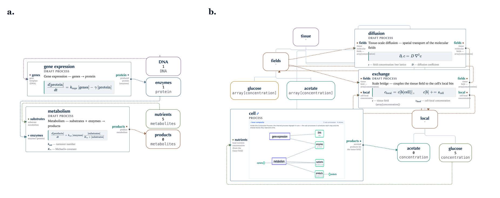

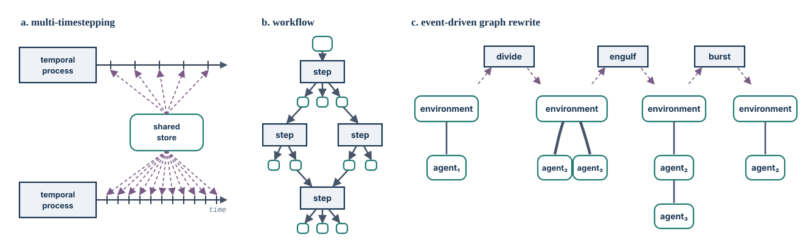

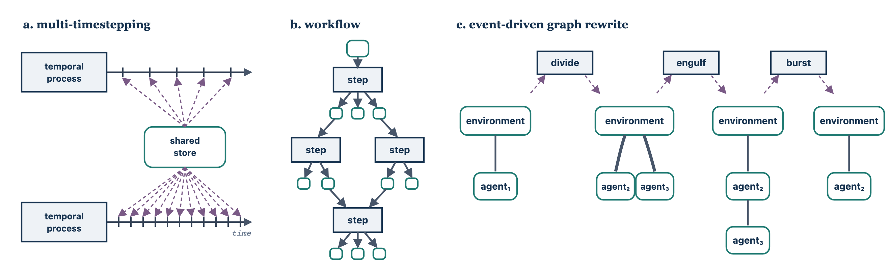


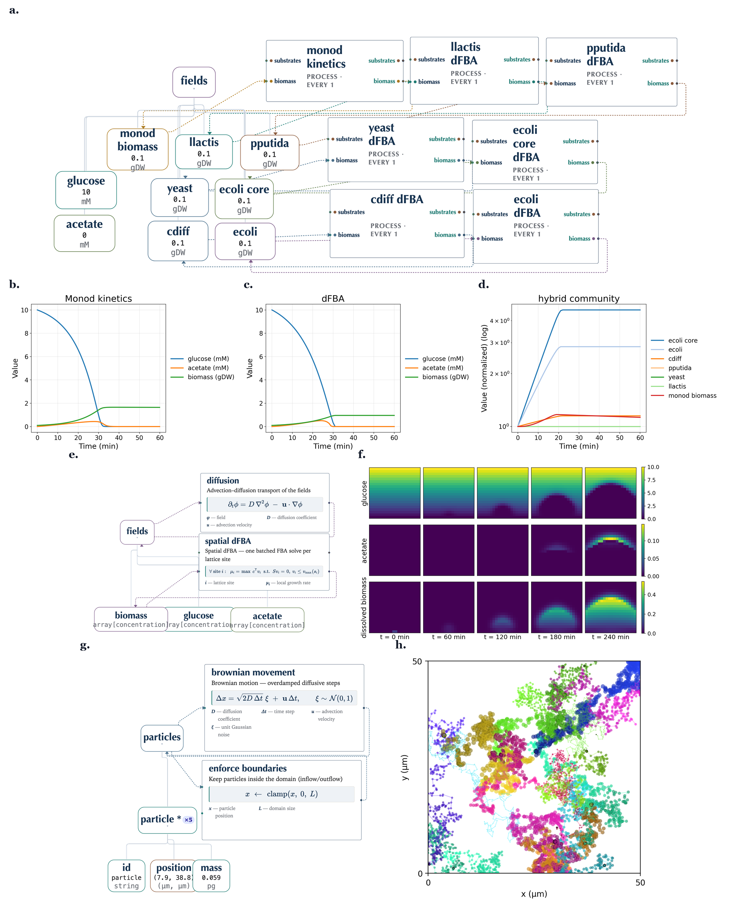


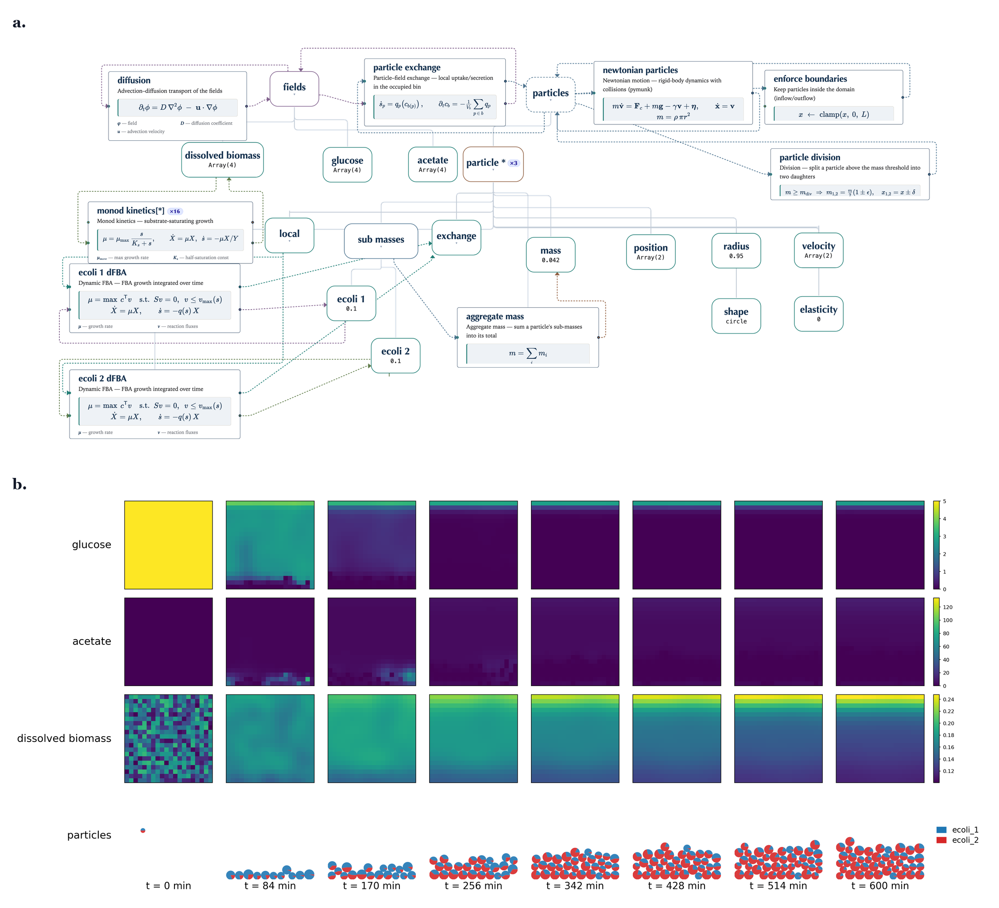
Fig 1 — draft processes + multiscale composite
fig-01


Fig 2 — Milner bigraph (a) + process bigraph (b)
fig-02


Fig 3 — store diagram + place graph
fig-03


Fig 4 — process diagram
fig-04

Fig 5 — process graph & composite process
fig-05


Fig 7 — spatio-flux example composites
fig-07


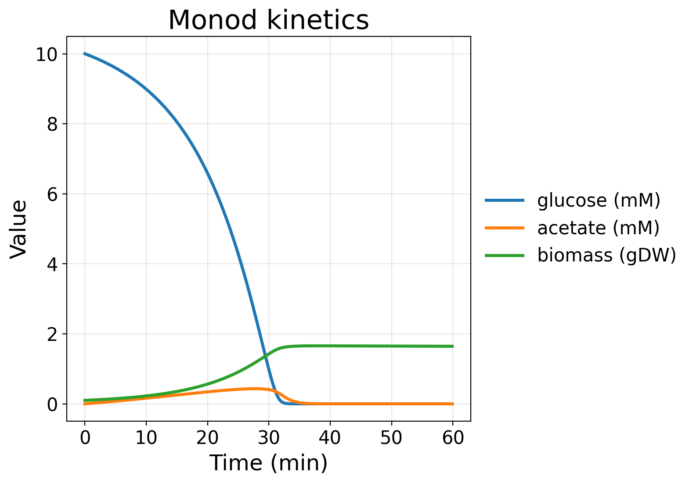

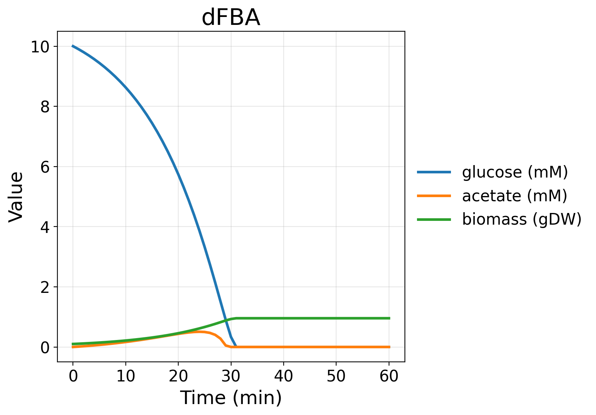

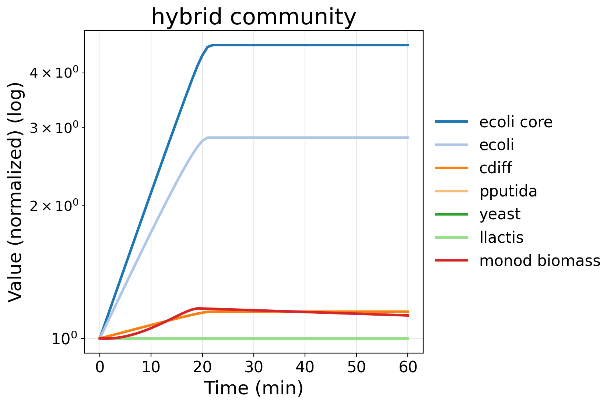


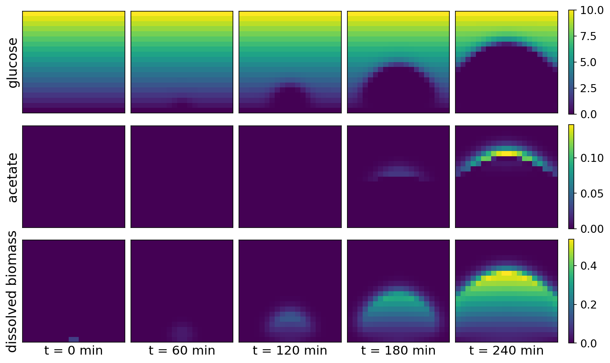


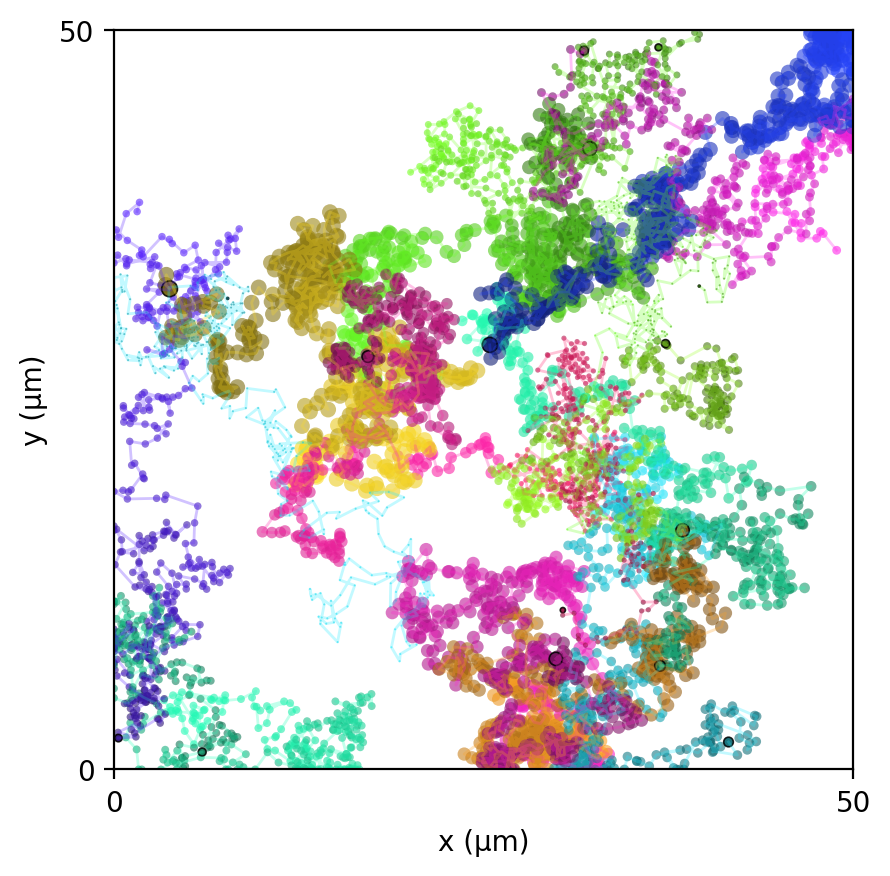
Fig 8 — spatio-flux reference model
fig-08


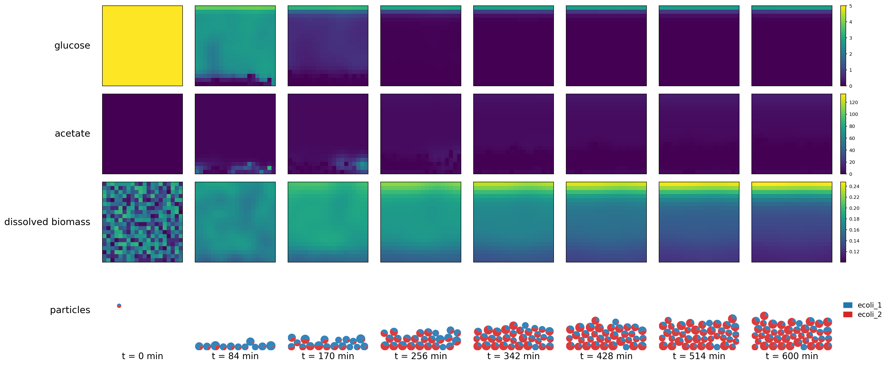